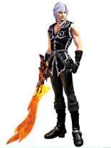

Forums galactiques > Assemblée Galactique : diplomatie officielle > Annonce de la Maison de Beddict
Nope, c'est bien. | 18 | |
C'est grandiose. | 4 | |
Nul, mn chat obèse écrit mieux... | 4 | |
Poubelle ? | 8 | |
D - Obiwan Kenobi. | 10 | |
Total : 44 vote(s) | ||
Pages : 1
| Hull beddict Respect diplomatique : 55 27/01 ETU 21:16 | Score : 14 Détails *Une vague image holographique, indiquant clairement un manque de maîtrise de cette technologie, apparait à votre écran.
Elle montre un homme dans la quarantaine, le visage burriné par la vie au grand air. Il est vétu d'un costume d'aparat bleu et porte une rapière à la ceinture. Le visage neutre, il respire un grand coup puis commence à parler... Le son arrive avec un décalage de quelques secondes : * << Salutations à vous, éminents membres de l'Assemblé Galactique! Je me présente, Commandant Hull Beddict, fils ainé de la maison des Beddict et désormais dirigeant de la planète de ma famille. Si je me présente ici devant vous, c'est pour déclarer à tous ma ferme intention de nouer des relations diplomatiques et commerciales pacifiques avec toutes les personnes de bonnes foi.>> *Il marque ici une pose, dit quelques mots puis pose sa main sur la garde de sa rapière.* << Ma maison n'es pas accoutumé à la guerre, même si pour parvenir à notre statut actuel, certaines batailles ont, hélas, eus lieu... >> *Il continu sa déclaration main ôte la main de son arme et semble parler avec véhémence :* << De plus, je suis connu, du moins sur ma planète, pour faire toujours passer les mots avant les armes ; et je déclare ici ma volonté de continuer dans cette voie !>> Je n'attaquerai jamais un monde sans y avoir été forcé en premier lieu, et cela qu'on se le dise !>> * Il marque à nouveau une pose avant de reprendre :* << J'annonce donc ici mon ardent désir d'entretenir des relations paisibles avec tous ceux qui passeront par mon système et, s'ils le désir, de commercer avec eux ; et ce, ... >> * Il recule d'un pas fait une courbette légerement sèche avant de se retirer, le son arrivant toujours en décalé. * << ...égalitairement et en faisant fi de tout affiliation à une faction pour peu que celle-ci n'est pas causé de tort à ma famille. Sur ce, je vous salus et attend de vos nouvelles avec impatience. >> *La transmission se coupe sur le logo de la Famille Beddict : une rapière, une plume se croisant derrière une pièce de monnaie.* | ||
| Mikhaïl Respect diplomatique : 3  28/01 ETU 04:21 | Score : 2 Détails Les Hordes déclarent:
Nous espérons pouvoir un jour faire affaire avec vous Mr Beddict. Nous vous souhaitons bonne chance, paix et prospérité dans votre avenir. Mikhaïl, chef des Hordes Mikhaliennes. | ||
| Hull beddict Respect diplomatique : 55 29/01 ETU 13:37 | Score : 2 Détails *L'hologramme réapparaît sur le visage de Hull Beddict affichant un sourire amical. Le son est encore en contre-temps.*
<< Je vous salut de même Commandant Mikhaïl, vous et vos hordes. J'attends avec impatience l'occasion de commercer avec vous.>> *Saluant de nouveau par une légère courbette, Beddict disparaît, remplacé par le logo de sa famille (Une plume et une épée croisées derrière une pièce de monnaie).* |
Pages : 1
Forums galactiques > Assemblée Galactique : diplomatie officielle > Annonce de la Maison de Beddict